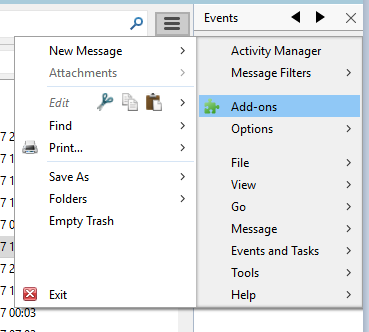

-
installez l'add on ImportExportTools
- téléchargez le plugin ici
-
installez le plugin

- redemarrez thunderbird
- exportez votre arborescence de mails
-
compressez le dossier exporté dans un fichier .zip

- envoyez l'archive zip en la téléchargeant dans l'interface ci-dessus